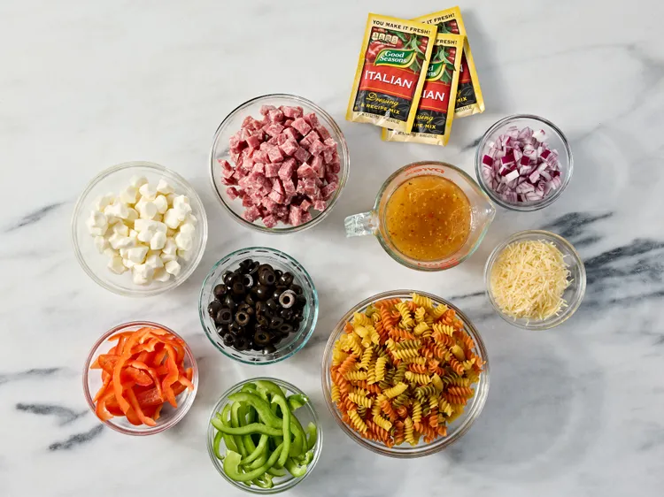
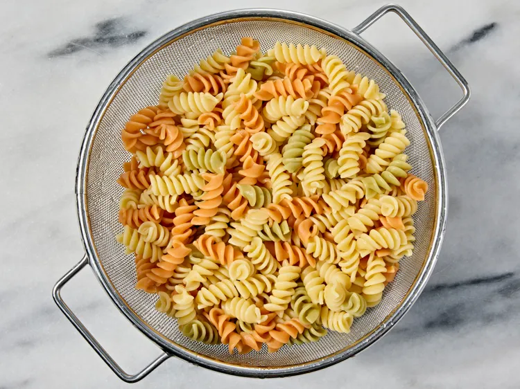
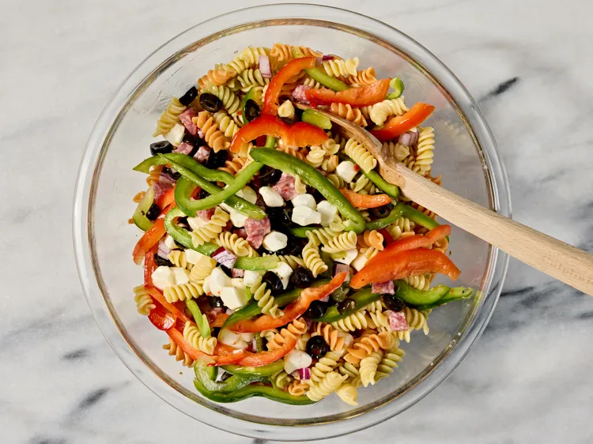
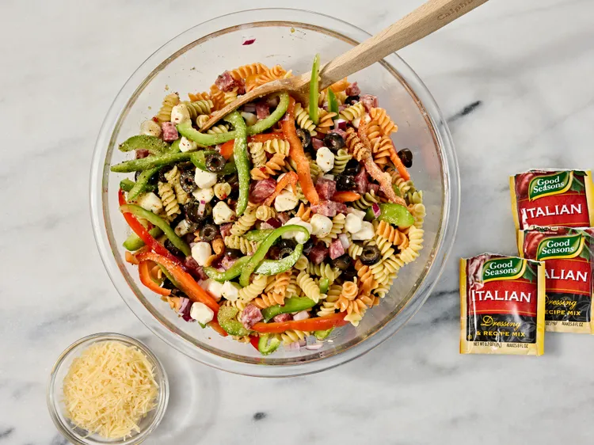

This delicious Italian pasta salad comes together quickly with salami, fresh mozzarella, colorful bell pepper, and red onion, all tossed in Italian salad dressing.
Ingredients:
1 (12 ounce) package tri-color rotini pasta
¾ pound Italian salami, finely diced
½ green bell pepper, sliced
½ red bell pepper, sliced
½ red onion, chopped
1 (6 ounce) can sliced black olives
8 ounces small fresh mozzarella balls
1 cup Italian-style salad dressing
3 (.7 ounce) packages dry Italian-style salad dressing mix, or to taste
½ cup shredded Parmesan cheese
Steps
Step 1
Gather all ingredients.

Credit: Photographer: Jen Causey / Food Styling: Chelsea Zimmer / Prop Styling: Phoebe Hausser
Step 2
Bring a large pot of lightly salted water to a boil. Cook rotini pasta at a boil until tender yet firm to the bite, about 8 minutes. Drain and rinse with cold water until cool.

Credit: Photographer: Jen Causey / Food Styling: Chelsea Zimmer / Prop Styling: Phoebe Hausser
Step 3
Combine pasta, salami, bell peppers, onion, mozzarella balls, and olives in a large bowl. Add salad dressing and toss to coat.

Credit: Photographer: Jen Causey / Food Styling: Chelsea Zimmer / Prop Styling: Phoebe Hausser
Step 4
Season pasta salad with dry salad dressing mix and stir to combine.

Credit: Photographer: Jen Causey / Food Styling: Chelsea Zimmer / Prop Styling: Phoebe Hausser
Step 5
Sprinkle with Parmesan cheese before serving. Enjoy!
Credit: Photographer: Jen Causey / Food Styling: Chelsea Zimmer / Prop Styling: Phoebe Hausser